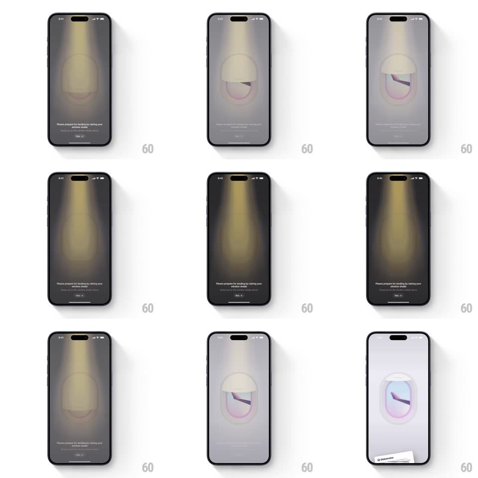

Media
Frame-by-frame

Rebuild this interaction 1:1: Globetrotter's onboarding - an airplane window shade the user swipes up to raise, flooding the dark cabin screen with daylight and flipping the app from dark to light mode.

Rebuild this interaction 1:1: Globetrotter's onboarding - an airplane window shade the user swipes up to raise, flooding the dark cabin screen with daylight and flipping the app from dark to light mode. ## Integration Integration: stack-agnostic spec - springs given as stiffness/damping, timed motions as duration + curve; map every value to your framework and animation library of choice. ## Scene A dark screen lit by a single cabin spotlight from above: an airplane window at center with its shade pulled down, the instruction "Please prepare for landing by raising your window shade", and a Skip link. Raising the shade reveals a bright sky-and-wing view and the entire UI transitions to light mode. ## Motion spec Pattern: swipe-up shade reveal driving a theme flip. - Idle: the cabin spotlight sways almost imperceptibly (light cone rotates +-2deg, 6s loop); the shade's bottom edge shows a grab lip that pulses (translateY 0 to 3px, 1.6s). - Drag the shade up: it tracks the finger 1:1 inside the window frame; through the widening gap, the bright exterior (blue sky, cloud, wing) is revealed - and the rest of the screen's theme lerps with shade progress: background from near-black to white, text inverting, spotlight fading out (all driven by drag %). - Release above 60%: the shade snaps fully up (spring ~380/22, a bounce as it hits the top) and the theme completes its flip with an overshoot glow (a brief 10% brightness bloom, 300ms). - Release below 60%: the shade slides back down (spring ~420/26) and the cabin re-dims with it. - Completion reveals the next onboarding content inside the light UI (crossfade, 300ms) - the window remains as a framed image. ## Calibration - The theme flip is bound to shade position continuously - half-raised is a genuine half-dark UI, not a two-state toggle. - The exterior view parallaxes slightly with drag (moves at 0.9x) for depth against the shade. ## Reduced motion Tap-to-open: shade slides up over 400ms and theme crossfades. ## Don't miss - The spotlight cone is the only light source in the dark state - it must visibly die as daylight wins. - The shade lip is the affordance; without the pulse the gesture is undiscoverable.